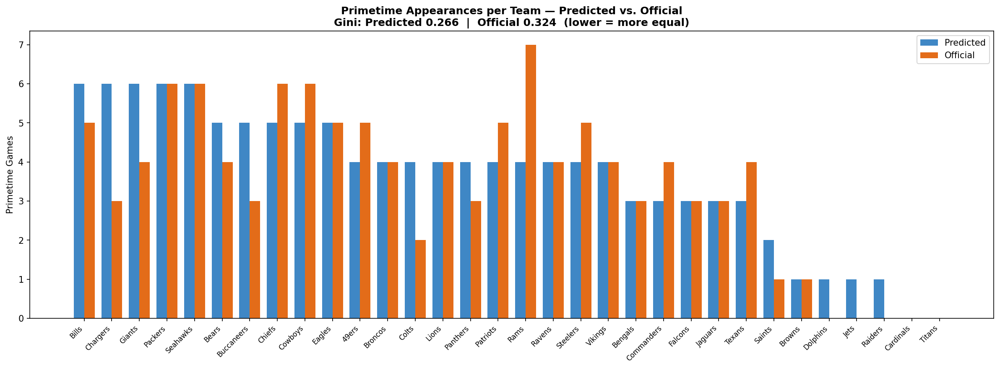
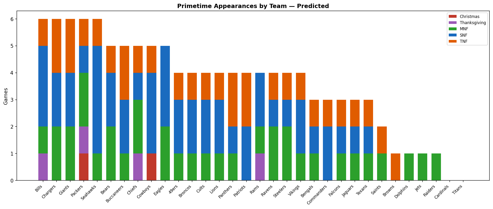
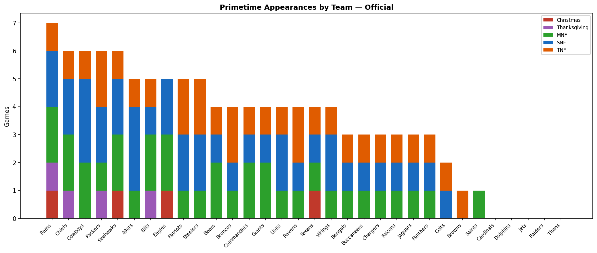
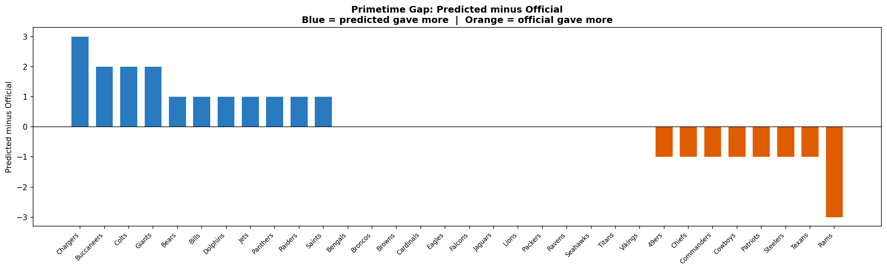
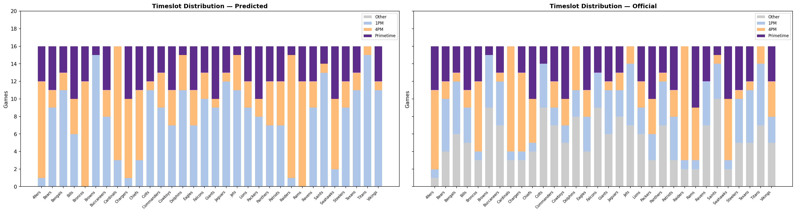
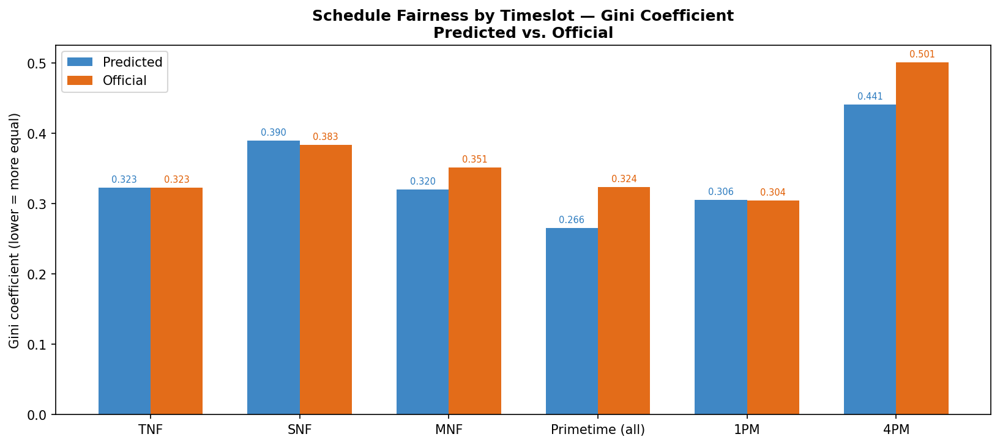

How evenly were primetime slots distributed? A comparison of the predicted schedule and the one the NFL actually released.
← Back to scheduleThe Gini coefficient measures how evenly primetime games are spread across all 32 teams. A Gini of 0 means every team gets the exact same number of primetime games; higher values mean more concentration among a few teams. Lower is fairer.

Teams sorted by predicted primetime appearances. The taller the blue bar above the orange, the more the predicted schedule gave a team relative to the real one, and vice versa.



Blue bars indicate teams that received more primetime slots in the predicted schedule. Orange bars indicate teams that received more slots in the official release.

Breakdown of all 17 regular weeks (Week 18 excluded as flex) by timeslot type. The predicted schedule aimed for a more even spread of 1PM and 4PM games across all 32 teams.

Lower Gini = more equitable distribution for that slot type. The predicted schedule generally achieves lower Gini scores across TNF, SNF, MNF, and standard afternoon windows because the ILP solver explicitly constrained how many primetime and afternoon games each team could receive.